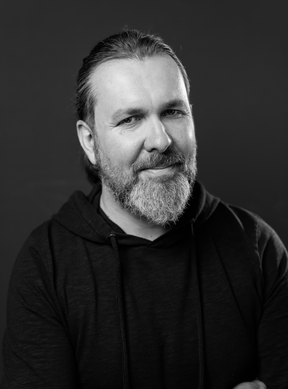
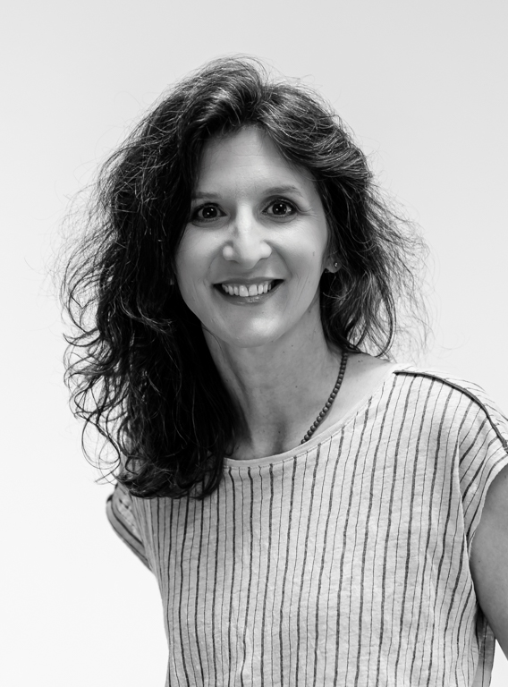

Leadership Camp pro firmy
Tři dny mimo běžné role.
Praktická týmová zkušenost, ve které uvidíte, co ve vašich lidech opravdu je, když zmizí obvyklé škatulky, porady a hotová zadání shora.
Co běžná porada neukáže
Malý projekt jako zrcadlo týmu.
Camp není další školení do kalendáře. Je to situace, ve které je vidět iniciativa, naslouchání, odvaha ověřovat i schopnost převést neurčitý problém do konkrétního dalšího kroku.
Účastníci během tří dnů zmapují svou osobní výbavu, najdou problém, který stojí za pozornost, vytvoří jednoduchou zkušební verzi řešení a ověří ji přímo v terénu u lidí, kteří mají důvod říct ano, ne nebo zatím ne.
Proč teď
Práce nemizí. Přeskládává se.
Budoucnost firmy nezačíná jen u strategie. Začíná i u lidí, jejichž schopnosti běžný provoz často neumí ukázat.
Lidé nejsou jen své pozice.
Obchodník jako obchodník, specialista jako specialista, manažer jako manažer. Camp na tři dny změní pravidla hry a nechá lidi vystoupit z běžných škatulek.
Domněnka musí ven z místnosti.
Tým mluví se zákazníky, kolegy nebo uživateli. Rychle zjistí, co je pěkný nápad a co má sílu pohnout druhým člověkem k akci.
Schopnosti se ukážou v pohybu.
Na malém projektu se rychle ukáže, kdo umí naslouchat, kdo vidí příležitost, kdo rozhýbe ostatní a kdo dokáže z neurčitého zadání udělat konkrétní další krok.
Jak to probíhá
Tři dny, které zvednou tým ze židlí.
Účastníci nejdřív pojmenují svou osobní výbavu. Pak hledají problém, který stojí za pozornost. A nakonec vyjdou do terénu ověřit, co obstojí mimo místnost.
1
Výbava a problém
Lidé vystoupí z běžných rolí, pojmenují své schopnosti a hledají oblast, kde mají energii a motivaci něco ovlivnit.
2
Terén a první řešení
Tým odděluje domněnky od reality, mluví se zákazníky, kolegy nebo uživateli a skládá první verzi řešení.
3
Zkouška, porota a reflexe
Účastníci testují, prezentují před odbornou porotou, získávají syrovou zpětnou vazbu a pojmenovávají, co si odnášejí zpět do práce.
Kontext změny
Dovednosti se mění rychleji než popisy pracovních míst.
World Economic Forum ve zprávě Future of Jobs Report 2025 upozorňuje, že do roku 2030 se promění téměř 40 % pracovních dovedností. Mezeru v dovednostech označuje 63 % zaměstnavatelů za hlavní překážku transformace.
40 % dovedností
se podle WEF do roku 2030 promění. Camp z toho nedělá prezentaci o budoucnosti práce, ale malou situaci, ve které je vidět, kdo se umí učit z reality.
Co z toho firma má
Lepší pohled na sebe a lidi kolem sebe.
Výstupem není jen dobrý pocit ze společného zážitku. Firma získá situaci, ke které se dá vracet při dalších projektech, změnách i běžné týmové práci.
Člověk
Schopnosti mimo pracovní škatulky
Účastníci si často poprvé pojmenují, že jejich obyčejná improvizace je ve skutečnosti schopnost rychle číst situaci a reagovat na potřebu druhého člověka.
Tým
Rychlejší učení z reality
Tým si vyzkouší malé pokusy místo dlouhých debat, ověřování místo domněnek a zpětnou vazbu dřív, než se projekt rozroste.
Firma
Společný jazyk pro další práci
Firma zahlédne potenciál, který v běžném provozu snadno zůstane skrytý, a získá jazyk pro další práci s odpovědností, iniciativou a zákaznickou realitou.
Přenos
Zkušenost, ke které se dá vracet
Camp nevrací jen energii. Dává firmě konkrétní situaci, na které je vidět, jak lidé čtou realitu, spolupracují a co si z toho lze přenést do další práce.
Pro koho
Pro firmy, které tuší, že další porada už nestačí.
Pro organizace, které potřebují své lidi znovu přiblížit zákazníkovi, realitě a vlastní odpovědnosti. V základní variantě camp neřeší citlivé interní projekty. Pokud firma chce pracovat přímo se svými tématy, připravíme variantu s interním zadáním.
Smíšené týmy, které potřebují vidět víc než role.
Pro vedení, specialisty, obchod, produkt, delivery, podporu i smíšené týmy.
Firmy v nové etapě nebo pod tlakem změny.
Pro firmy v nové etapě, při reorganizaci nebo při dopadu AI na práci.
Lidé, kteří reálně ovlivňují druhé, i když nejsou manažeři.
Pro lidi, kteří možná nejsou manažeři, ale každý den ovlivňují zákazníka, kolegu nebo uživatele.
Kdo camp vede
Podnikání, technologie, vzdělávání a práce s lidmi.
Camp vedou Tomáš Vavrda a Taťána Beránková Císařová. Spojují podnikatelskou zkušenost, technologickou změnu a vzdělávání postavené na zážitku, reflexi a odvaze zkusit věci dřív, než si člověk začne úplně věřit.


Prakticky
Zakázkový camp pro jednu firmu nebo tým.
Konkrétní podobu ladíme podle skupiny, firemního kontextu a návazné práce. Před campem mapujeme potřeby a očekávání, po campu pomáháme zkušenost přenést zpět do praxe.
Závěr
Člověk uvidí, co umí. Tým zažije, že se může pohnout.
Firma zahlédne potenciál, který v běžném provozu snadno zůstane skrytý.